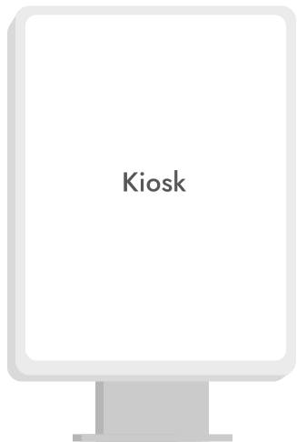
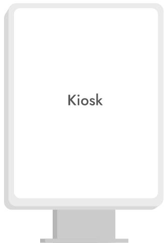

Burgerking Japan
Omnichannel
버거킹재팬 옴니채널 프로젝트에서 기획과 디자인, 채널 역할을 수행했습니다.
버거킹 코리아 옴니채널을 기획, 디자인, 운영한 경험을 바탕으로 일본시장 현지화를 진행했습니다.
현지에서 테스트 및 오픈 대응 작업을 완료했습니다.


Overview
일관된 UX로 업그레이드 및
일본 시장에 맞게 현지화
버거킹 코리아 옴니채널 프로젝트에서 웹과 키오스크 작업, 운영을 진행하였습니다.
이후 일본 시장에 맞게 현지화하는 작업을 PM으로 수행하였습니다.
한국에서 설정된 기본적인 틀은 가져가되, 일본시장에 맞는 UX를 찾기 위해
현지 리서치 및 인터뷰 후, 프로젝트 UX콘셉트를 재정의하며 옴니채널을 런칭하였습니다.
Consistency for Every channel

 

Process
UX 기획 전체 과정을 총괄하여 진행하였습니다.
현지 오픈대응까지 완료하며 프로덕트 매니저 역할을 수행하였습니다.
Define
- 경쟁사 분석 및 평가
- 시장 분석
- 현지 브랜드 분석
당시 일본에서 주문 기능을 수행하고 있는
서비스를 조사하였습니다.
일본 내 온라인 서비스를 탐색하고,
버거킹 브랜드의 현지 상황을 온오프라인으로 파악했습니다.
Ideation
- 코크리에이션 워크샵
- Stakeholder Interview
- UX Concept
마케팅 부서, 개발팀, IT담과 정기적인
워크샵을 통해 니즈를 분석하고
Concept를 수립하였습니다.
Stakeholder Interview를 진행하며
방향을 설정하였습니다.
Prototype
- Information Architecture
- App, Web Wireframe 작성
- Admin Wireframe 작성
- Visual Design
전체 구조를 설계하고, 일본 시장에 적합한
와이어프레임을 작성하였습니다.
해당 기능을 지원하는 백오피스 시스템 기획하고,
POS 등 관련시스템과 연계 작업도 진행하였습니다.
현지에 적합한 Key Visual을 디자인하였습니다.
Test
- 테스트 시나리오 작성
- 임직원 대상 테스트 진행
- 필드 테스트
- 사용자 피드백 반영
테스트 시나리오를 작성하였습니다.
임직원 대상 테스트를 진행하며, 조율하였습니다.
알림톡 발송 규칙에 맞는지 확인하는 테스트와
매장 내 주문 테스트도 진행하였습니다.
Define_ Field Research
현지 매장과 경쟁사 매장을 방문하여,
브랜드와 시장조사를 진행했습니다.
매장의 분위기와 제품을 확인하며 현지 내 브랜드를 소비자로서 체험했습니다.
안정적으로 온라인 픽업주문(사이렌오더)을 제공하고 있는 스타벅스를 방문, 조사하였습니다.